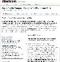
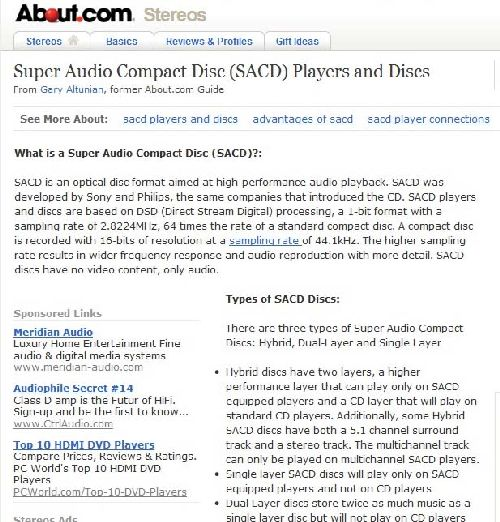
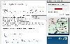
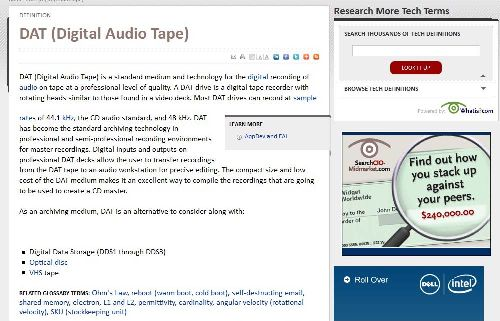

Pocetna
Literatura
Primjeri
Slične Stranice:




Drugi audio standardi
Uvod
Super audio CD - SACD
razvili Sony i Philips
visoka kvaliteta audio signala
uzorkovanje 2.8 MHz (64 x 44.1 kHz)
informacija se prenosi s 1 bitom koji nosi informaciju je li uzorak veći ili manji od prethodnog
DAT (Digital Audio Tape)
32, 44.1, 48 KHz
16 bitno linearno ili 12 bitno nelinearno kodiranje
Video formati često ne podržavaju uzorkovanje sa 48 kHz, preporuka 44.1 kHz
Nazad
1.Svojstva audio signala
2.Digitalizacija govora
3.Dinamički raspon ljudskog sluha
4.CD audio kodiranje
5.DVD audio kodiranje
7.Tehnike za kodiranje govora
8.MPEG-1 audio
9.MPEG-1 audio layers
Link na službenu web stranicu kolegija
Multimedijska tehnika
kolegiju možete pristupiti putem moodle-a
ovdje